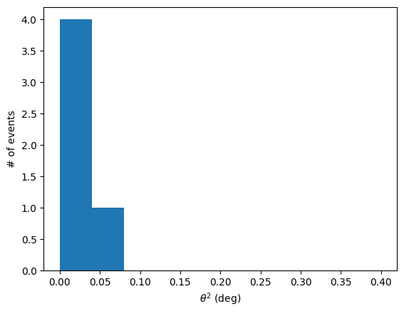

Make a theta-square plot¶
This is a basic example to analyze some events and make a \(\Theta^2\) plot
[1]:
%matplotlib inline
[2]:
from astropy import units as u
from astropy.coordinates.angle_utilities import angular_separation
from astropy.coordinates import SkyCoord, AltAz
import matplotlib.pyplot as plt
import numpy as np
from ctapipe.io import EventSource
from ctapipe.calib import CameraCalibrator
from ctapipe.image import ImageProcessor
from ctapipe.reco import ShowerProcessor
from tqdm.auto import tqdm
Get source events in MC dataset.
[3]:
source = EventSource(
"dataset://gamma_prod5.simtel.zst",
# allowed_tels={1, 2, 3, 4},
)
subarray = source.subarray
calib = CameraCalibrator(subarray=subarray)
image_processor = ImageProcessor(subarray=subarray)
shower_processor = ShowerProcessor(subarray=subarray)
[4]:
off_angles = []
for event in tqdm(source):
# calibrating the event
calib(event)
image_processor(event)
shower_processor(event)
reco_result = event.dl2.stereo.geometry['HillasReconstructor']
# get angular offset between reconstructed shower direction and MC
# generated shower direction
true_shower = event.simulation.shower
off_angle = angular_separation(true_shower.az, true_shower.alt, reco_result.az, reco_result.alt)
# Appending all estimated off angles
off_angles.append(off_angle.to(u.deg).value)
calculate theta square for angles which are not nan
[5]:
off_angles = np.array(off_angles)
thetasquare = off_angles[np.isfinite(off_angles)]**2
Plot the results¶
[6]:
plt.hist(thetasquare, bins=10, range=[0, 0.4])
plt.xlabel(r'$\theta^2$ (deg)')
plt.ylabel("# of events")
plt.show()
